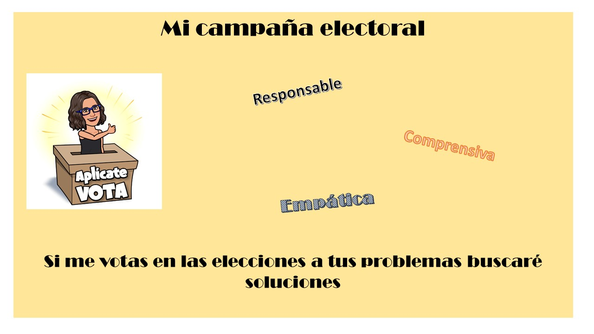
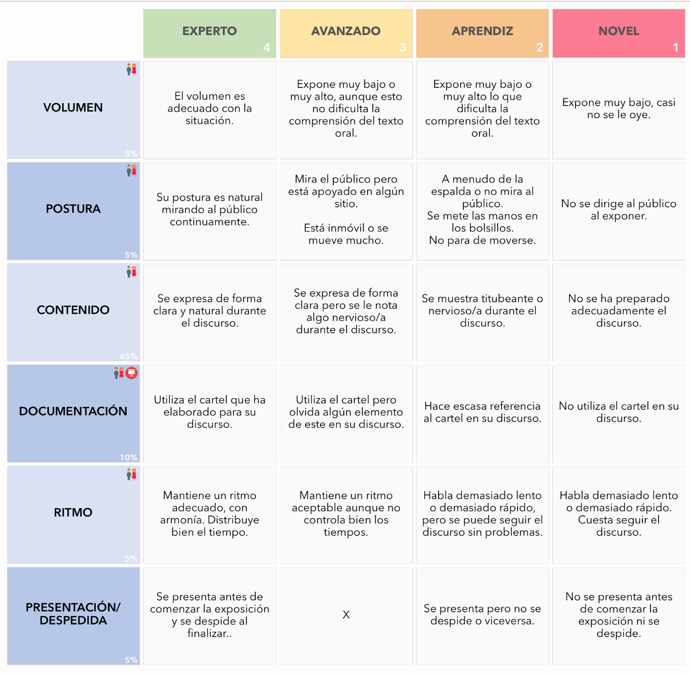

A. Exposición oral del cartel
¡Ya están todos los carteles listos! Ha llegado el momento de explicar a tus compañeros tu cartel y tu programa electoral.
¿Qué te parece preparar una exposición oral para destacar las partes más importantes de tu cartel?.
Tendrás que preparar un pequeño discurso en el que deberás presentarte, mostrar tu cartel y explicar a tus compañeros los motivos por los que deben votarte incluidos en tu programa electoral. Recuerda que esta actividad es evaluable.

Escucha el ejemplo:

Creado con Spechgen.io (CC BY-NC-SA)
Elabora tu borrador
Antes de comenzar a hablar, se debe elaborar un guion. ¡Así no olvidaremos nada importante!
Coge papel y lápiz y sigue estos pasos:
1. Usa tu cartel
Utiliza tu cartel para convencer a tus compañeros. Puedes usar también otro material extra que pueda ser interesante.
2. Haz un borrador de lo que vas a decir.
Es importante expresar toda la información recogida en el cartel. Para ello, puedes seguir esta secuencia:
- Di tu nombre. También puedes añadir datos personales (edad, lugar de nacimiento…).
- Haz referencia a la imagen.
- Lee el eslogan. Hazlo con una buena entonación y buen ritmo para que llame la atención.
- Explica el texto. Mejor que leerlo, lo puedes decir con tus palabras. Di todas las características que te hacen un buen candidato o candidata.
3. Practica.
Durante el ensayo, ten en cuenta estos consejos:
Mantén una postura erguida y relajada.
Haz gestos, mueve los brazos y desplázate lentamente por el escenario.
Usa el guion como apoyo, pero intenta no leer el discurso completo.
Utiliza un volumen adecuado para el aula.
Habla despacio, haciendo pausas donde sea necesario.
Vocaliza y entona adecuadamente (recuerda la entonación de preguntas y exclamaciones).
Lectura facilitada
Exposición oral del cartel.
Ya están los carteles listos.
Ahora vamos a enseñarlos a las compañeras y compañeros.
Podemos preparar una buena exposición
para mostrar las partes más importantes.
Antes de hablar haremos un guion.
Que no se nos olvide nada.
Coge papel y lápiz.
Sigue estos pasos:
1. Usa el cartel.
2. Haz un borrador.
3. Practica.
Consejos:
- Buena postura.
- Haz gestos.
- Usa el guion como apoyo.
- Volumen adecuado.
- Habla despacio.
- Vocaliza y entona adecuadamente.
B. Valora la exposición de tus compañeros
A continuación vas a evaluar las exposiciones orales de tus compañeros utilizando la ficha de puntuación y la rúbrica que hay abajo ( tu maestro te dará una copia).
Rodea en rojo la puntuación total de los 3 candidatos o candidatas que hayan obtenido mejor puntuación.
Cuando tengas todas las puntuaciones tendrás un motivo más para votar a un candidato u otro.
